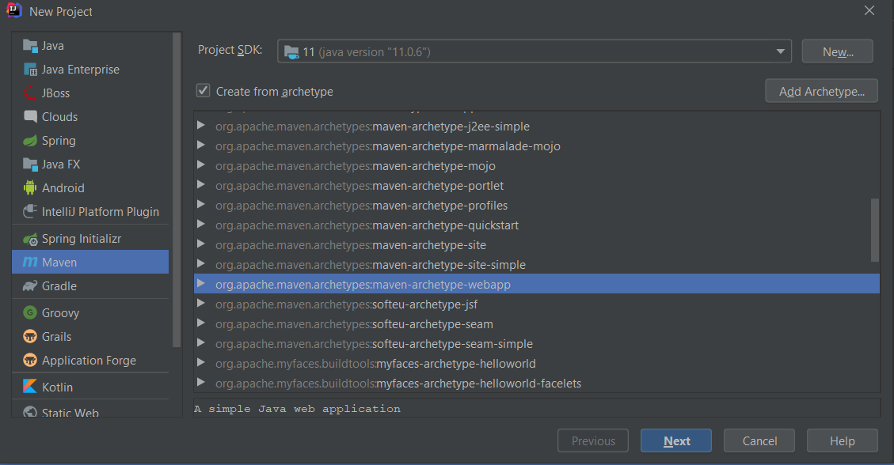
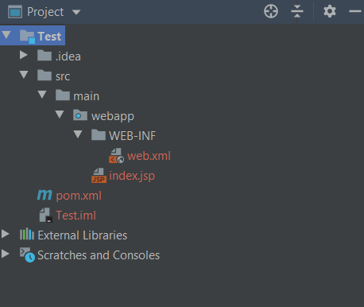
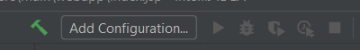
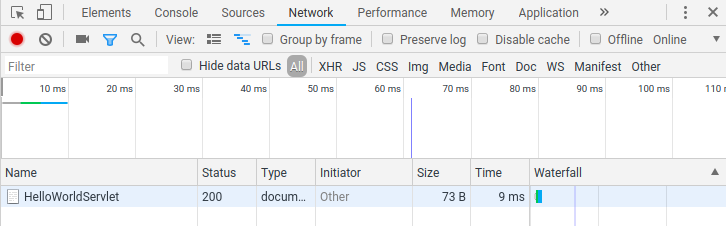

8. gyakorlat¶
Servletek¶
Mik azok a servletek?¶
A servletek egy Web- vagy Alkalmazásszerveren programok, melyek egyfajta köztes rétegként szolgálnak a kérések (HTTP kérések) és az adatbázis és/vagy más alkalmazások között.
A servletek segítségével elküldhetünk a szervernek user form adatokat, adatokat mutathatunk webes felületen a felhasználónak, melyek az adatbázisból érkeznek, továbbá a statikus HTML tartalmak mellett dinamikusan állíthatunk elő HTML tartalmakat. Innen a név: Java Dinamikus Web.
A Java servleteket Java osztályok segítségével valósíthatjuk meg, melyek a következő package-ekben találhatóak meg:
javax.servletjavax.servlet.http
A servleteket ugyanúgy le kell fordítani, mint bármelyik másik Java osztályt.
Hello World Servlet¶
A servletek fejlesztéséhez szükségünk van néhány eszközre. Mint azt már fent olvashattuk kell egy szerver, amin majd fut az alkalmazásunk. Esetünkben az Apache Tomcat alkalmazásszervert fogjuk használni.
Az általunk használt verzió a 9-es, melyet letölthetünk innen.
Én csak a zip-et mutatom meg, mivel ezt egységesen lehet kezelni minden platformon.
Tehát töltsük le a zippelt verziót!
Ezután csomagoljuk ki egy kellemes helyre (például C:\apps\apache-tomcat-9.0.31). Az alverzióban lehetnek eltérések, de ez nálunk nem fog semmit sem befolyásolni.
Ezután indítsuk el az IntelliJ-t és készítsünk egy új Maven projektet!

Java 11-et fogunk használni, így az legyen letöltve, illetve beállítva a $Path és a $JAVA_HOME környezeti változókban.
A projekt SDK-ját is 11-re állítjuk, mint ahogy a képen ez látszik is.
Nyomjuk meg a Next-et!
A project nevéhez adjuk meg a HelloWorld-öt!
Az Artifact Coordinates alatt adjuk meg a groupId-t (pl: hu.alkfejl), majd Next és Finish.
Eredményképpen a projekt struktúrája valahogy így kell kinézzen:

Ha ezzel megvagyunk, akkor a jobb felső sarokban adjunk hozzá egy új konfigurációt, itt fogjuk megadni, hogy a Tomcat szerveren futassa az alkalmazásunkat a rendszer.

A felugró ablakban a bal oldalon a Válasszuk ki a Template-ek közül a Tomcat Server/Local menüpontot!
Ezután a jobb oldalon a Server fül alatt az Application Server-nél nyomjuk a Configure... gombra!
A felugró ablakon adjuk meg a Tomcat server mappáját (pl: C:\apps\apache-tomcat-9.0.31)!
Nyomjuk meg az Ok gombot!
A Server fül többi eleme maradhat alapértelmezetten, talán a legfelső Name sort érdemes lehet átírni Tomcat-re.
A jobb felső sarokban, ha rányomunk a create configuration-re, akkor ezt a szerverbeálltást más alkalmazásoknál is használhatjuk majd, így érdemes lehet erre kattintani.
Ekkor viszont alul kiírja a Warning: No artifacts marked for deployment szöveget a rendszer.
Kattintsunk a fix-re gombra és válasszuk ki az <alkalmazásunk neve>:war elemet (Pl: Test:war)!
Ezután Apply és Ok!
Ha ezekkel megvagyunk, akkor mehet a zöld play gomb. Miután elinul a Tomcat server, akkor automatikusan felrakja az alkalmazásunkat a rendszer a Tomcat-re és egy böngészőben elindítja azt.
Videó a folyamatról:

Ha a fentiekkel megvagyunk akkor létre is hozhatunk egy tényleges servletet.
Az eddigi egy statikus HTML oldallal még nem dinamikus web.
A maven archetype alapból nem generál nekünk java forrást, így jobb klikk a main-re a project struktúrán belül, majd New->Directiory>java.
Eután ebbe a könyvtárba hozzunk létre egy új osztályt.
Class name-nek adjuk meg a HelloWorldServlet-et!
Írjuk bele az alábbiakat a fájlba!
1 2 3 4 5 6 7 8 9 10 11 12 13 14 15 | |
1 2 3 4 5 | |
Figyelem
10-es Tomcat esetében több dolgot másképpen kell csinálnunk, mivel breaking change-ek léptek fel.
Például a fenti függőség már nem megfelelő, mivel a 10-es Tomcat már nem a javax.servlet-api-t használja, hanem a jakarta.servlet-api-t, melyhez tartozó Maven dependency:
1 2 3 4 5 | |
Emiatt az összes helyen, ahol a függőség osztályait használjuk, az importokat is meg kell változtatni.
A servlet-api mellett a JSP is megváltozott javax.servlet.jsp-ról jakarta.servlet.jsp-re, továbbá a később használni kívánt EL (Expression Language) függőség is megváltozott a javax.el-ről jakarta.el-re.
A változások teljes listája megtalálható itt.
A fenti változtatások miatt a Tomcat 9.x.x verzióját javasoljuk használni, mivel a példakódok mind ezzel készültek.
A kis zöld play gomb helyett most egy újrajátszás gomb van (amennyiben még fut a Tomcat), melyre ha rányomunk és a redeploy-t választjuk, akkor a Tomcat szerverre újratölti az alkalmazásunkat a rendszer, azaz újra lefordítja egy war-rá (ez a jar webes megfelelője: Web Archive-ból jön a név) és beletolja az alkalmazásszerverbe. Ugyanezt a lenti a Server->Deployment->Deploy all gombra kattintva is megtehetjük.
Ezzel meg is van a minta projektünk. A továbbiakban közelebbről is megnézzük a generált projektet és a generált fájlok tartalmát.
Videó az első szervlet létrehozásáról:

Servletek életciklusa¶
A servletek életciklusa 3 fő részre osztható:
init(): a servlet létrejöttekor hívódik meg (csak egyszer). Általában egy servlet akkor jön létre, amikor először kér hozzáférést egy felhasználó, de rendelkezhetünk másképpen is (pl. a szerver indításakor töltődjön be a servlet is).service(): a felhasználói kéréseket (esetünkben HTTP kérések) a service szolgálja kidestroy(): a servlet megsemmisítésekor hívódik
A fenti metódusokat a szervlet konténer hívja meg.
A servlet létrehozása után, amikor a felhasználó kérést küld egy szervernek, akkor a servletből egy példány létezik és a kéréseket külön szálak kezelik.
Ezeket a kéréseket a servlet service() metódusa kezeli (mindet külön szálon).
A service metódus belül "szétválogatja" a kérések típusát és meghívja, a doGet(...), doPost(...), stb. metódusokat.
A fenti példában csak a GET kéréseket kezeljük.
GET kérés például, ha az URL-re navigálunk.
A doGet-nek, ahogyan minden doXXX metódusnak két paramétere van melyek igen fontosak, hiszen így tudhatunk meg információkat a kérés pontos mivoltáról, illetve a válaszba így helyezhetünk el információkat (válasz státusz kódja, válasz header-ök, cookie-k, stb).
A két paraméter típusa:
HttpServletRequest: a kérés típusaHttpServletResponse: a válasz típusa

Adatok küldése a szervernek¶
Az alkalmazásunk működésekor biztosan szükségünk lesz valamilyen információkra, melyet a felhasználó küld az alkalmazásszervernek. A GET és a POST esetében eltérő opcióink vannak.
A GET esetében az úgynevezett queryString-ben szokás küldeni információkat. Pl.:
http://www.test.com/hello?key1=value1&key2=value2
Az adatokat az URL-ben küldjük el a szervernek.
Az URL-ben a query string kezdetét a '?' jelzi, majd utána key=value formában adhatjuk meg az adatokat, melyeket '&' választ el egymástól.
Ezeket a paraméterek a servlet megkapja és ezt fel tudjuk majd használni.
POST esetében is használhatunk queryString-et, de a POST kérés rendelkezik törzzsel is. Szerencsére a törzsben és a queryString-ben érkező paramétereket egységesen érhetjük el, nem kell külön-külön vizsgálnunk őket.
Az adatok kinyerésére a servletben 4 fő metódus használható:
getParameter()getParameterValues()getParameterNames()getParameterMap()
Nézzünk erre egy példát! Az előző példát módosíthatjuk egyelőre:
1 2 3 4 5 6 7 8 9 10 11 12 13 14 15 16 17 18 19 20 21 22 23 24 25 26 27 28 29 30 31 32 33 34 35 | |
A példában csak a doGet metódust definiáljuk, melyben a válasznak beállítjuk a tartalom típusát (mime type), majd a response objektum-hoz lekérjük a PrintWriter-t és ezen keresztül fogjuk írni a választ.
A válaszba egy HTML-t generálunk, melybe belerakjuk az előzetesen elküldött first_name és last_name paramétereket.
Miután elkészítettük a servletünket és futtatjuk azt a Tomcat serverünkön, írjuk be a következőt a böngésző címsorába:
1 | |
A szerver által küldött válaszba így belekerülnek az elküldött adatok.

Most nézzük meg ugyanezt egy form használatával! Ehhez készítsünk egy HTML állományt! Az is megfelelő ha az index.jsp-t írjuk át:
1 2 3 4 5 6 7 8 9 10 | |
Amit nagyon fontos észrevenni, hogy a form rendelkezik egy action és egy method attribútummal.
Az action-ben mondhatjuk meg, hogy ki fogja kezelni a kérést, melynek típusát pedig a method-ban adhatjuk meg (jelenleg GET).
A fenti servlet-et egy az egyben használhatjuk.
Miután megnyomjuk a submit gombot egy GET kérést küldünk a HelloWorldServlet-nek, ami az előzővel megegyező kimenetet adja, ha a formba ugyanazokat az adatokat írjuk, mint amit a queryString-ben megadtunk.
A form-on belül fontos az input elemeknek a name attribútuma, mivel a servlet ilyen néven fogja elérni ezeket a paramétereket.
Azt is fontos látni, hogy a form nem a query stringben küldi a paramétereket, hanem a form data-ban, viszont a szerver oldalon (a szervletben) egységesen tudjuk a paramétereket kiolvasni és nem kell azzal foglalkoznunk, hogy azt hol adták meg.
A fenti példában, ha átírjuk az index.jsp-ben, hogy GET helyett POST-ot használjunk, akkor nem fog működni a történet, de nagyon egyszerűen megoldható.
A servletben hozzunk létre egy doPost(...) metódust is, mely a következőképpen néz ki:
1 2 3 4 | |
A fenti kódrészlet nemes egyszerűséggel továbbadja a doGet-nek a feladatot (továbbítja a kérés és a válasz objektumokat is). Az eredmény pedig ugyanaz lesz, de ezennel POST kéréstípust használtunk.
A következő példában az összes elküldött paramétert kiírjuk a válaszban.
1 2 3 4 5 6 7 8 9 10 11 12 13 14 15 16 17 18 19 20 21 22 23 24 25 26 27 28 29 | |

Feladat
Készítsük el a fenti példát úgy, hogy a getParameterMap() metódust használjuk a paraméterek kinyeréséhez!
Arra figyeljünk, hogy lehetnek olyan paraméterek, melyekhez több érték tartozik.
Ezért ad vissza a getParameterMap() egy String -> String[] map-et.
Status codes¶
A válaszban a szerver beállíthat egy status code-ot, melyet aztán a kliens oldalon különböző célokra használhatunk. Néhány gyakori HTTP status code:
- 200: OK (minden rendben van)
- 400: Bad Request (a szerver nem érti, hogy mit szeretne a kliens a kérésével)
- 401: Unauthorized (nincs joga a felhasználónak, pl.: csak admin kérdezhet ilyet tőlem...)
- 404: Not Found (nem találom azt az erőforrást amire szükséged van. Pl.: olyan HTML oldalt keresek ami nem létezik a szerveren)
- 500: Internal Server Error: A szerveren valami nem várt hiba történt
Ezeken felül még rengeteg féle HTTP status code van, de ezekkel már bőven el lehet indulni.
Állítsunk be status code-ot a válaszban!
1 2 3 4 5 6 | |
Ha a böngészőben (pl.: Chrome-ban) a http://localhost:8080/HelloWorld/HelloWorldServlet helyre látogatunk és előszedjük a fejlesztői eszközöket (Chrome-ban F12), ott válasszuk ki a network fület!
Itt láthatjuk, hogy történt egy kérés a HelloWorldServlet-re, melynek a status code-ja 200-at adott vissza.

Magát a HelloWorldServlet kérést is kiválaszthatjuk, ha rákattintunk, és ekkor több információt láthatunk az adott kérésről.
Feladat
Próbáljuk ki, hogy átírjuk a status code-ot mondjuk 404-re vagy valamilyen hibajelző status code-ra!
Próbáljuk ki, a következőt is: response.sendError(401, "Need auth");
Feladat
Az előző témában megírt form-os példát egészítsük ki úgy, hogy amennyiben a paraméterek között nem szerepel valamelyik elvárt érték (last_name vagy first_name), akkor 400-as hibakódot adunk vissza.
web.xml¶
Itt az ideje, hogy megvizsgáljuk a web.xml állományt, melyet legeneráltattunk a rendszerrel!
A web.xml egy úgynevezett deployment descriptor, melyet a deploy-olás során használ a rendszer (azaz akkor amikor a legyártott war-t belerakjuk az alkalmazásszerverbe és ott elindul az alkalmazás).
A deployment descriptor egy általános elnevezése az olyan konfigurációs fájloknak, melyek egy alkalmazás, webes tárolóba történő telepítésének módját definiálják, strukturált formában.
A Java Platform, Enterprise Edition leírói megadják, hogyan legyenek telepítve a modulok és komponensek. Ilyen komponensek lehetnek például webalkalmazások. Ez a leíró fájl tartalmazza az utasításokat a webalkalmazás telepítéséhez, melyet "deployment tool" fog értelmezni. Ez a beállítások alapján, különféle konténer és biztonsági beállítást végez el, valamint speciális környezeti beállításokat alkalmazhat. A szervleteket az alkalmazásszerver az úgynevezett servlet konténerbe tölti be és itt fognak futni ezek a szervletek.
Webalkalmazásoknál a telepítési leírókat web.xml-nek hívják, és a projekt mappaszerkezetében a WEB-INF mappában található.
A web.xml-ben is megadhatóak például a servlet elnevezések és az URL leképezések.
Servletek és URL-ek¶
A web.xml egy kapcsolatot definiál URL címek és a szervletek között, melyek a kéréseket szolgálják ki. A Webkiszolgáló arra használja ezt a konfigurációs fájlt, hogy megkeresse az adott URL-hez tartozó szervletet, és meghívja a kéréshez tartozó osztály megfelelő metódusát. (pl. a doGet() metódust a HTTP GET kérések esetén).
Egy URL-t egy szervlethez a következő módon lehet kapcsolni. A <servlet> kulcsszóval deklaráljuk a szervletet, majd megadjuk a kapcsolatot egy URL címmel. Ezt a <servlet-mapping> kulcsszóval tehetjük meg.
A <servlet> elem megadásához definiálnunk kell a nevét, az osztályát és a kezdeti paramétereit (ha vannak ilyenek). Az osztály tag arra a Java osztályra hivatkozik, amely a szervlethez befutó kérések kezelését valósítja meg. Többször is deklarálható ugyanaz az osztály, ha a kiindulási paraméterei különbözőek, azonban a névnek egyedinek kell lennie a teljes fájlban.
1 2 3 4 5 6 7 8 9 | |
A fenti példában definiálunk egy Servlet-et, melynek neve HelloWorldServlet lesz.
A hozzá tartozó osztály ugyanerre a névre hallgat.
Ezután a <servlet-mapping>-ben megadhatjuk, hogy az előzetesen HelloWorldServlet névre keresztelt servlet az összes olyan kérést szolgálja ki, amely a /HelloWorldServlet URL-re történik.
Ha minden kérést ezzel a servlettel szeretnénk kiszolgálni, akkor írhatnánk ezt is:
1 2 3 4 | |
Az alkalmazásunkban, ha megtekintjük a web.xml állományt, akkor mégsem látunk ilyen servlet megadást.
Ez azért van, mert a 3.0-ás servlet standardba bekerült egy új elem, melynek segítségével könnyebben megadhatjuk a fenti URL leképezést.
Ehhez vizsgáljuk, meg a HelloWorldServlet osztályt!
Vegyük észre az alábbi annotációt az osztályon!
1 | |
Ez pontosan azt mondja meg a rendszernek, hogy ez az osztály egy servlet, mely a /HelloWorldServlet URL-re érkező kéréseket fogja kiszolgálni.
Ebben az esetben a servlet neve megegyezik az osztály nevével.
Amennyiben máshogy szeretnénk rendelkezni akkor az annotációnak megadhatunk további paramétereket is.
Példák:
1 2 3 4 5 6 7 8 9 10 11 12 13 14 15 | |
A teljes listát lásd itt.
Welcome File Lista¶
Amikor egy URL nem egy fájlra, hanem a szerveren található valamely almappára hivatkozik, akkor lehetőség van megadni egy sor alapértelmezett oldalt, amik kezelik a kérést.
A welcome file listát a web.xml-en belül kell megadnunk.
1 2 3 4 | |
Ebben az esetben, ha ellátogatunk a localhost/<alkalmazásunk neve> helyre, akkor a rendszer elsőként egy index.jsp-t fog keresni és ezt küldi vissza válaszként, ha ilyet nem talál, akkor megpróbálja ugyanezt az index.html-el.
Servletek együttműködése¶
A RequestDispatcher osztály nyújt ehhez támogatást, melynek segítségével a kérést egy másik erőforráshoz (HTML, servlet, JSP) juttathatjuk el.
Használhatjuk arra is, hogy egy másik erőforrás (HTML, servlet, JSP) válaszát elhelyezzük az eredeti kérést kiszolgáló servlet válaszába (igazából több erőforrás játszik szerepet a válasz létrehozásában).
A RequestDispatcher két metódust ad erre:
public void forward(ServletRequest request,ServletResponse response)throws ServletException,java.io.IOExceptionpublic void include(ServletRequest request,ServletResponse response)throws ServletException,java.io.IOException
A következő ábrán a forward látható:
A felhasználó küld egy kérést, melyre a Servlet1 ad valamilyen választ (a response-ban bármit állíthatunk), pl beleírja az output stream-be, hogy cica (de még nem küldi a választ vissza a kliensnek!!!). Ezután továbbítjuk a Servlet2-höz a RequestDispatcher segítségével. A Servlet2 elhelyezi a válaszban a saját eredményeit (pl beleírja, hogy macska). Ezután már nem forwardolunk, hanem a választ visszaküldjük a kliensnek, mely így tartalmazza a Servlet1 és a Servlet2 válaszait is. Az is előfordulhat, hogy a Servlet1 nem helyezett el semmilyen konkrét elemet a válaszban, viszont mondjuk ő állít be automatikusan egy szükséges paramétert Servlet2 számára.
Ehhez képest az include egy picit másképpen működik, ahogy azt az alábbi ábra jól mutatja:
A Servlet1 include-olja a Servlet2-t, mely elkészíti a válaszát és azt a Servlet1 válaszába is belerakjuk.
A RequestDispatcher-re az alábbi módon szerezhetünk referenciát:
1 2 | |
Bejelentkezés példa¶
index.html
1 2 3 4 5 | |
Login.java
1 2 3 4 5 6 7 8 9 10 11 12 13 14 15 16 17 18 19 20 21 22 23 24 25 26 | |
WelcomeServlet.java:
1 2 3 4 5 6 7 8 9 10 11 12 13 14 | |
A fenti példa pusztán a szervletek együttműködését mutatja be, production kódba ne használjunk ilyen logint!!!
Átirányítás¶
Az include-hoz és a forward-hoz hasonló a sendRedirect metódus, de fontos különbségek vannak, melynek megértését az alábbi ábra mutatja:
Ebben az esetben a Servlet1 válaszban annyit küld, hogy neked kliens fiam, valahova máshova kell menned, hogy megkapd a megfelelő választ. Ezt vissza is küldi a kliensnek, majd Servlet2-höz megy el a kliens és ő fogja a végeredményt elétárni. Példa: Amennyiben sikerült bejelentkezni egy rendszerbe (servlet1 végzi az autentikációt), akkor az alkalmazásszerver továbbirányítja a felhasználót valamilyen kezdőképernyőre, mondjuk a profiljára.
Példa:
1 | |
ServletConfig¶
A web konténer minden szervlet számára készít egy ServletConfig obkjektumot, mely lehetővé teszi a servletek konfigurációját, paraméterezését.
Példa:
web.xml
1 2 3 4 5 6 7 8 9 10 11 12 13 14 15 16 17 18 | |
DemoServlet:
1 2 3 4 5 6 7 8 9 10 11 12 13 14 15 16 | |
Fontos
A paraméter csak az adott servletben lesz elérhető!!! Amennyiben alkalmazás szintű 'globális' paraméterre van szükségünk, akkor használjuk a ServletContext-et!
A request-ben elhelyezett paraméterekhez hasonlóan itt is lekérhető az összes inicializáló paraméter:
1 2 3 4 5 6 7 8 9 10 11 12 13 | |
ServletContext¶
A web konténer a szervletekhez készít egy-egy különálló Config objektumot, melyet az előző fejezetben láttunk, azonban ezen felül készít egy globális láthatóságú ServletContext objektumot is, melyet minden szervletből elérhetünk.
A globális láthatóságú, több szervletből is használni kívánt paramétereket a context-ben állítsuk be!
A ServletContext objektumot a servlettől, a request, és a ServletConfig-tól is elkérhetjük.
1 2 3 4 5 | |
A web.xml-ben a következőképpen adhatunk meg paramétert:
1 2 3 4 5 6 7 8 9 | |
A Context-ből is lehetőségünk van lekérni az összes init paramétert:
1 2 | |
Attribútumok¶
Az attribútumokat több scope-ban is beállíthatjuk. Tekinthetünk rájuk úgy, mint különböző scope-ban definiált változókra. A scope-ok a következőek lehetnek:
- request scope ->
HttpServletRequest - session scope -> HttpSession
- application scope (context scope) -> ServletContext
Az összes scope-ban a következő metódusokat használhatjuk:
public void setAttribute(String name,Object object)public Object getAttribute(String name)public void removeAttribute(String name)
Példa, amiben az application (context) scope-ot használjuk egy attribútum beállítására, majd azt a másik servletben kiolvassuk
1 2 3 4 5 6 7 8 9 10 11 12 13 14 15 16 17 18 19 20 21 | |
DemoServlet2:
1 2 3 4 5 6 7 8 9 10 11 12 13 14 15 16 17 | |
Munkamenet kezelése (session management)¶
Mivel a HTTP protokoll egy állapotmentes protokoll, azaz a kérések között nincs állapotmentés, azért valamilyen megoldásra szükség van, hogy ezt a hiányosságot kiküszöböljük.
A munkamentek követésére lehetőséget nyújtanak a következők:
- Cookies
- Hidden Form Field
- URL újraírás
- HttpSession
Cookies¶
A Cookie egy kicsi információszelet, mely megőrződik a kérések között. Egy cookie-nak van neve, értéke, és további opcionális attribútuimai (comment, verziószám, maximum kor)
Egy új kérésnél a válaszhoz hozzáadhatjuk a cookie-t és innentől kezdve a kliens az összes kérésben elküldi az általunk a szerverről visszaküldött cookie-t. A cookie alapvetően a kliens böngészőjének cache-ben tárolódik.
Két típusa:
- Non-persistent: egy session alatt él, amikor a felhasználó becsukja a böngészőt akkor a cookie törlődik
- persistent: több session-ön keresztül él, csak akkor töröljük a cookie-t, ha a felhasználó kilép.
Hártánya, hogy ha a kliens nem engedélyezi a cookie-k használatát, akkor az egész session tracking nem fog működni, továbbá a cookie-ban csak szöveges információt tarthatunk (számot szövegként tudunk tárolni, de bináris infot már nem).
A cookie-k használatához a Cookie osztály ad segítséget.
Példa egy cookie hozzáadására:
1 2 | |
Figyelem
A Tomcat 8.5 utáni verziója már az RFC 6265 szabványt használja a Cookie-k tekintetében, ami nem engedi meg a whitespace-ek használatát a cookie-kban.
Mivel a cookie kliens oldalon tárolt, így törlése kicsit trükkösebb:
1 2 3 | |
A cookie-k lekérése:
1 2 3 4 5 | |
HttpSession¶
A munkamenet követésének egyik lehetséges megoldásaként a session szolgál, mely egy-egy felhasználóhoz külön-külön biztosít egy ilyen scope-ot, azaz a felhasználó munkamenetéhez adhatunk hozzá/olvashatunk ki adatokat. A web konténer minden felhasználóhoz egy egyedi session id-t rendel, mellyel aztán azonosítja a felhasználói munkamenetet.
Session lekérése:
1 2 | |
Hasznos metódusok:
1 2 3 4 | |
Attribútum beállítása:
1 2 | |
Attribútim lekérése:
1 2 | |
Filterek¶
A filter egy olyan objektum, melynek utasításai közvetlenül a kérés kiszolgálása előtt (pre-process) vagy közvetlenül a válasz előállítása (még nem küldjük vissza) után (post-processing) futnak le. Használható például adatkonverzióra, logolásra, tömörítésre, kódolásra és dekódolásra, input validációra, autentikációra, autorizációra stb.
Fontos osztályok:
- Filter (maga a filter osztály)
- FilterChain (minden filter helyet foglal egy filter láncban, melyet meg is kap a filter)
- FilterConfig (minden filternek lehetnek egyedi beállításai, hasonlóképpen mint a ServletConfig a Servlet esetében)
A filternek nem doGet, doPost, stb metódusai vannak, hanem egy doFilter metódusa, ahol a filter logikáját adhatjuk meg.
A filtereket is a web.xml-ben adhatjuk meg. A filtereknek is meg lehet adni, hogy mely url-ekre fusson le.
1 2 3 4 5 6 7 8 9 10 11 12 13 | |
Ha a filterek sorrendje számít akkor használjuk a web xml-t!
Amilyen sorrendben szerepelnek a web.xml-ben olyan sorrendben fognak lefutni.
Ugyanakkor, lehetőség van a WebFilter annotáció használatára is, de itt a sorrendet nem tudjuk befolyásolni.
Példa:
1 2 3 4 5 6 7 8 9 10 11 12 13 14 15 16 17 18 19 | |
A servleteknél látott módon a filtereknek is lehet paramétereket megadni, melynek kezelése ugyanúgy megy mint a servleteknél.